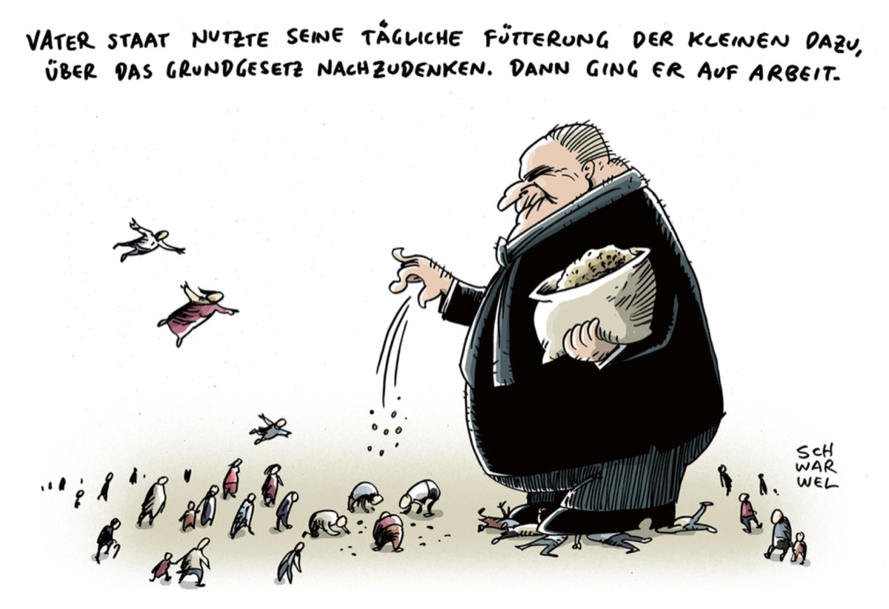

AFB I fragt Wissen ab, AFB II verlangt Erklären und Anwenden, AFB III verlangt ein begründetes Urteil.
Diskussionsauftakt. Die Debatte ist bewusst gegenwartsnah und anschlussfähig.
In Deutschland wird 2026 weiter darüber gestritten, ob der Sozialstaat einfacher, digitaler und transparenter werden soll, wie stark Leistungen gekürzt oder erhalten werden dürfen und wo staatliche Fürsorge in Bevormundung umschlägt. Genau darin steckt die Grundfrage der Stunde: Ist Freiheit vor allem Schutz vor staatlichem Eingriff, oder braucht Freiheit soziale Sicherheit, gemeinsame Regeln und staatliche Ordnung?
Der Staat soll Menschen nicht im Detail vorschreiben, wie sie leben, heizen, arbeiten oder konsumieren. Freiheit bedeutet hier vor allem individuelle Entscheidung und Schutz vor Ueberregulierung.
Ohne soziale Absicherung bleibt Freiheit für viele nur formal. Freiheit braucht materielle Mindestbedingungen, Schutz vor Armut und faire Chancen.
Beurteile spontan: Welche Position ist für dich überzeugender? Begründe mit einem Beispiel aus der Gegenwart.
Prüfe dein Urteil: Argumentierst du eher liberal (Freiheit des Individuums), sozialistisch (soziale Gerechtigkeit), konservativ (Ordnung und Stabilität) oder demokratietheoretisch (Legitimation durch Volk und Gewaltenteilung)? Genau diese Denkweisen werden jetzt historisch erschlossen.
M1 "Das Verhältnis von Bürgerin und Bürger und Staat karikiert" (Karikatur Schwarwel, S. 200): "Vater Staat" füttert die Kleinen und geht dann dazu über, über das Grundgesetz nachzudenken. Die Karikatur ist der Einstieg in die Frage nach Nähe und Grenze staatlicher Fürsorge.

Bevor du den Wissens-Check bearbeitest: Betrachte zuerst die Karikatur M1 (Schwarwel, S. 200) genau und lies den Materialtext oben. Erst mit dieser Grundlage kannst du die folgende Aufgabe beantworten - sie prüft dein Verständnis der Karikatur, nicht dein Vorwissen.
Kurzer Einstieg: Wahr oder falsch? Tippe bei jeder Aussage auf Wahr oder Falsch.
Beschreibe die Karikatur M1 sachlich: Was ist zu sehen? Achte auf Figuren, Größenverhältnisse, Handlung und Beschriftung, bevor du deutest.
Erwartbar: Eine grosse, übermächtige Figur ("Vater Staat") streut aus einer Tüte Futter an viele kleine, hilflos wirkende Gestalten am Boden. Der Text spricht davon, dass der Staat seine tägliche Fütterung nutzt und über das Grundgesetz nachzudenken beginnt. Das Größenverhältnis (riesig gegen winzig) und die Fütter-Geste stehen im Zentrum. Wichtig: zuerst nur beschreiben, noch nicht bewerten.
Analysiere die Karikatur M1 kritisch und beurteile sie. a) Welche Beziehung zwischen Bürgern und Staat wird dargestellt? b) Welche Interpretationen sind möglich? c) Inwiefern spiegelt oder verzerrt die Karikatur die tatsächliche Rolle des Grundgesetzes in einer Demokratie?
Erwartbar: a) Dargestellt wird ein Gefälle: der Staat als bevormundender Versorger, die Bürger als abhängige Bittsteller - Nähe zu Positionen, die vor Ueberversorgung und Entmündigung warnen. b) Deutungen: Kritik am ausufernden Sozialstaat; oder Kritik daran, dass der Staat das Grundgesetz nur beiläufig "bedenkt". c) Verzerrung: Das Grundgesetz bindet den Staat gerade an Grundrechte und begrenzt seine Macht (Rechtsstaat, vgl. später Locke und M7). Die Karikatur überzeichnet die Abhängigkeit und blendet diese Bindung des Staates an das Recht aus.